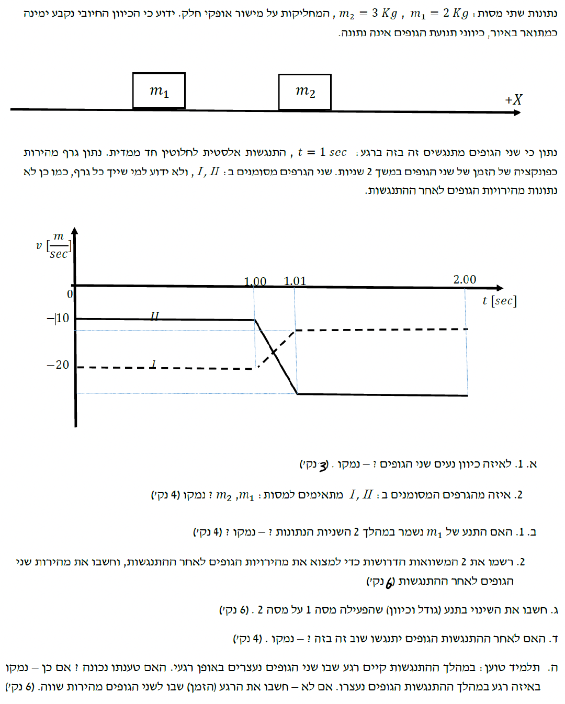

מהגרף ניתן לראות כי עבור זמנים \( t < 1 \text{ sec} \) שתי המהירויות שליליות: ערך גרף I הוא \( -20 \text{ m/s} \) וערך גרף II הוא \( -10 \text{ m/s} \). כמו כן נתון כי הכיוון החיובי נקבע ימינה.
לאיזה כיוון (ימינה או שמאלה) נעים שני הגופים לפני ההתנגשות.
הגדרת וקטור המהירות בקינמטיקה. הסימן של המהירות מעיד על כיוון התנועה ביחס לציר הייחוס.
מכיוון שהציר החיובי מוגדר ימינה, ומהירויות שני הגופים לפני ההתנגשות בעלות סימן שלילי, הרי ששני הגופים נעים נגד הכיוון החיובי.
מסה \( m_1 = 2 \text{ kg} \) נמצאת משמאל למסה \( m_2 = 3 \text{ kg} \). שני הגופים נעים שמאלה, וידוע כי הם מתנגשים.
לקבוע איזה גרף (I או II) מתאים לאיזו מסה.
עקרון התנועה היחסית: כדי שגוף ישיג גוף אחר שנע באותו כיוון ויתנגש בו, עליו לנוע במהירות גדולה יותר.
שני הגופים נעים שמאלה. כדי שתתרחש התנגשות, הגוף שנמצא מאחור (מימין) חייב לנוע שמאלה מהר יותר מהגוף שנמצא מלפנים (משמאל). כלומר, המהירות של \( m_2 \) חייבת להיות גדולה בערכה המוחלט מהמהירות של \( m_1 \). מכאן נובע כי המהירות של \( m_2 \) היא זו ששווה ל- \( -20 \text{ m/s} \) והמהירות של \( m_1 \) היא זו ששווה ל- \( -10 \text{ m/s} \).
אנו בוחנים את תנועת מסה \( m_1 \) במהלך כל 2 השניות המתוארות בגרף, הכוללות את זמן ההתנגשות מ- \( t = 1.00 \text{ s} \) עד \( t = 1.01 \text{ s} \).
האם התנע של \( m_1 \) נשמר במהלך פרק זמן זה.
הגדרת התנע: \( p = mv \) ועקרון שימור התנע במערכת: התנע של גוף נשמר רק אם שקול הכוחות החיצוניים הפועלים עליו שווה לאפס.
במהלך ההתנגשות, מסה \( m_2 \) מפעילה כוח על מסה \( m_1 \). לגבי מסה \( m_1 \) בפני עצמה, כוח זה מהווה כוח חיצוני. מכיוון שפועל עליה כוח חיצוני שאינו אפס, המהירות שלה משתנה (כפי שניתן לראות בבירור בגרף), ולכן התנע שלה (\( p = mv \)) לא שווה לפני ואחרי פרק זמן זה.
מהירויות התחלתיות מתוך הגרפים וסעיפים קודמים: \( v_1 = -10 \text{ m/s} \), \( v_2 = -20 \text{ m/s} \). מסות: \( m_1 = 2 \text{ kg} \), \( m_2 = 3 \text{ kg} \). ההתנגשות היא אלסטית לחלוטין חד-ממדית.
שתי משוואות דרושות, וחישוב מהירויות שני הגופים לאחר ההתנגשות שנסמן ב- \( u_1 \) ו- \( u_2 \).
חוק שימור התנע למערכת מבודדת: \( m_A v_A + m_B v_B = m_A u_A + m_B u_B \) ומשוואת התנגשות אלסטית חד-ממדית: \( v_B - v_A = -(u_B - u_A) \).
משוואה ראשונה - שימור תנע:
משוואה שנייה - התנגשות אלסטית:
נציב את המשוואה השנייה בתוך הראשונה:
נמצא את המהירות של הגוף השני:
מהירויות מסה 2: התחלתית \( v_2 = -20 \text{ m/s} \) וסופית \( u_2 = -12 \text{ m/s} \). מסתה היא \( m_2 = 3 \text{ kg} \).
את גודל וכיוון השינוי בתנע של מסה 2.
הגדרת שינוי התנע: \( \Delta p = p_{final} - p_{initial} = m \cdot v_{final} - m \cdot v_{initial} \).
נחשב את השינוי בתנע של גוף 2:
מכיוון שהתוצאה חיובית, כיוון השינוי בתנע הוא ימינה (בכיוון הציר החיובי).
מהירויות הגופים לאחר ההתנגשות: גוף 1 (השמאלי) נע במהירות \( -22 \text{ m/s} \) וגוף 2 (הימני) נע במהירות \( -12 \text{ m/s} \).
האם יתנגשו שוב? ונמק.
ניתוח קינמטי אינטואיטיבי של מיקום יחסי ומהירות יחסית.
שני הגופים נעים שמאלה לאחר ההתנגשות. הגוף השמאלי (\( m_1 \)) נע מהר יותר מהגוף הימני (\( m_2 \)) מכיוון ש- \( |-22| > |-12| \). מאחר והגוף המוביל נע מהר יותר מהגוף שעוקב אחריו, המרחק ביניהם ילך ויגדל עם הזמן.
התנגשות מתרחשת בפרק הזמן שבין \( 1.00 \text{ s} \) לבין \( 1.01 \text{ s} \). התנע הכולל של המערכת הוא \( p_{total} = -80 \text{ kg} \cdot \text{m/s} \) (מתוך סעיף ב.2).
האם הגופים נעצרים באופן רגעי במהלך ההתנגשות. ואם לא, מתי יש להם מהירות שווה.
חוק שימור התנע למערכת, וקינמטיקה של תנועה שוות תאוצה: \( v = v_0 + at \) כאשר התאוצה במהלך ההתנגשות מחושבת מהגרף.
תחילה נבדוק את טענת התלמיד: אם שני הגופים נעצרים באותו רגע, מהירותם המשותפת היא 0, ולכן התנע הכולל יהיה 0. מאחר שהתנע במערכת נשמר ושווה ל- \( -80 \text{ kg} \cdot \text{m/s} \), מצב זה בלתי אפשרי וטענתו אינה נכונה.
הרגע שבו מהירויות שני הגופים שוות מתרחש בשיא ההתעוותות (רגע ההתנגשות הפלסטית הרגעית). נסמן מהירות זו ב- \( v_c \) ונשתמש בשימור תנע:
נחשב את תאוצת אחד הגופים (למשל \( m_1 \)) מתוך הגרף בזמן ההתנגשות (משך ההתנגשות הוא \( 0.01 \text{ s} \)):
נשתמש במשוואת המהירות כדי למצוא את פרק הזמן הדרוש ל- \( m_1 \) להגיע ממהירות של \( -10 \text{ m/s} \) למהירות של \( -16 \text{ m/s} \):
נוסיף זמן זה לזמן תחילת ההתנגשות: